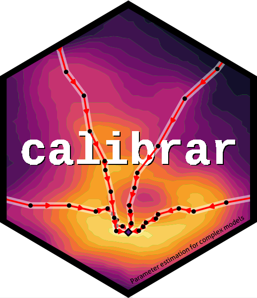

Adaptive Hierarchical Recombination Evolutionary Strategy
Source:R/calibrar-main.R
ahres.Rdahres() runs the AHR-ES optimiser directly through a dedicated interface.
It is primarily intended for bounded, derivative-free optimisation of
expensive or black-box objective functions, including calibration problems in
which the objective may be noisy or obtained from an external model.
Usage
ahres(
par,
fn,
gr = NULL,
...,
lower = -Inf,
upper = +Inf,
active = NULL,
control = list(),
hessian = FALSE,
parallel = FALSE
)Arguments
- par
A numeric vector or list. The length of
pardefines the number of parameters to be estimated (i.e., the dimension of the problem).- fn
The objective function to be minimised. It should accept a parameter vector (or list, depending on the wrapper) as first argument and return either a scalar value (single-objective) or a numeric vector (multi-objective).
- gr
Function computing the gradient of
fn. Ignored byahres().- ...
Additional arguments passed to
fnandgr.- lower
Lower bounds for parameters. One value or a vector of the same length as
par.NAis treated as-Inf. Default is unconstrained.- upper
Upper bounds for parameters. One value or a vector of the same length as
par.NAis treated asInf. Default is unconstrained.- active
Boolean vector of the same length as
par, indicating if the parameter is used in the optimisation (TRUE) or held at a fixed value (FALSE).- control
A list of control options. Common options include
ncores,run,master,verbose,REPORT,restart.file,gradient, andgr.method. Additional solver-specific options may be passed through to the underlying optimiser.- hessian
Logical. Should a numerically differentiated Hessian matrix be returned? Currently not implemented.
- parallel
Logical. Enable parallel computation (e.g., for replicated evaluations and/or numerical gradients) using up to
control$ncorescores.
Value
An object of class "ahres.results", typically with components:
- par
Best parameter values found, returned on the original scale.
- value
Objective value at
par, returned on the original objective scale.- counts
Number of function and gradient evaluations.
- convergence
Convergence code (
0usually indicates a regular stop,1that the maximum number of generations/evaluations was reached).- message
A short message describing the stopping condition.
- generations
Number of generations performed.
- partial
Optional vector of objective components when the objective function returns more than one value.
- trace
Optional tracing information when tracing is enabled.
- active
Information about active parameters used during optimisation.
Details
ahres() accepts the same broad interface as the other optimisation entry
points in calibrar, but is specialised to the "AHR-ES" algorithm.
Parameters may be supplied as a vector or list. Internally, list-structured
parameters are flattened for optimisation and then restored before the result
is returned.
The function supports box constraints through lower and upper, and
parameter masking through active, so only selected parameters are evolved
while the others are held fixed at their supplied starting values.
If control$parscale and/or control$fnscale are supplied, optimisation is
performed on the corresponding scaled parameter space and objective scale,
and results are transformed back before being returned.
gr is accepted only for interface compatibility and is ignored by this
method. In the current implementation, control$maxit or control$maxgen
must be supplied; otherwise the optimisation stops with an error.
For scalar objectives, the default settings are usually sufficient. For
vector-valued objectives, advanced users may also need to provide suitable
control entries such as weights, nvar, and aggFn, depending on how
the objective has been constructed.
Parallel execution
AHR-ES parallelism is controlled through entries inside control, notably
control$parallel and control$ncores. The top-level parallel argument is
currently retained for interface consistency but is not used directly inside
ahres().
See also
optimh(), optim2(), calibrate(), summary.ahres.results()
Other optimisers:
calibrate(),
optim2(),
optimh()